终则有始 Git 旅，将其事式，问如何初始化、加，提交，如何回退，请起！
为什么要用Git
现在才说为什么要用Git似乎有些晚了，但一切都在我的规划之中 ## 没用Git之前的苦恼 相信文字工作者经常遇到这样的问题，一篇文章中，某几个段落或者句子需要来回更改，但是呢，最后可能决定还是之前的好，于是疯狂的撤销，有时候撤销到极限也找不回来；于是，聪明的你想到了另存为这个伟大的功能，每改一次，就用一次另存为，你可真是个小机灵鬼～～，最终出现了以下局面：
👆🏿满脸嫌弃👆，好好的一个文件夹，硬生生的变成了杂物间，完全不符合极简主义者的生活理念。
更加要命的是，一份文档可能是多个人同时编写，比如：同事让你把现在写完的发给他一份，他要改改，然后就形成了这么个局面----同事修改稿子，你继续写稿子，过了三天，同事发给你修改完的，这三天你已经修改了8次稿子了，这时候你就非常头疼怎么合并同事的稿子和现在的稿子。
有了Git之后
这时你急需要一个自动管理改动的软件：不用每次另存为，只需要在一个文件里改动，想回退到多久都行，不同的人改动之后可以清晰的对比改动内容：
| 版本 | 文件名 | 用户 | 说明 | 日期 |
|---|---|---|---|---|
| 5 | 程序设计方案.docx | XcYu | 合并修改后的用户需求 | 2025-1-8 |
| 4 | 程序设计方案.docx | XcYu | 修改了用户需求 | 2025-1-4 |
| 3 | 程序设计方案.docx | MinuteSheep | 修改了用户需求 | 2025-1-4 |
| 2 | 程序设计方案.docx | XcYu | 增加了用户需求 | 2025-1-3 |
| 1 | 程序设计方案.docx | XcYu | 第一次提交 | 2025-1-1 |
如上所示，你的文件夹里永远只有程序设计方案.docx一个文件，干干净净的，舒服～～，想要看看之前的内容也是轻而易举，完美～～
Git工作模式
相信你已经迫不及待的想要玩弄git了，首先需要了解git的工作模式。
必须明白三个区：工作区、暂存区、仓库
工作区：当前文件夹就是工作区，这是你工作（编辑文件）的区域
仓库：上述表格就是仓库的目录，表格内的东西全部规规矩矩的存在仓库中
暂存区：从名字上分析，大概也懂了吧。将工作区的文件放到仓库（形成一个版本）必须经过暂存区。
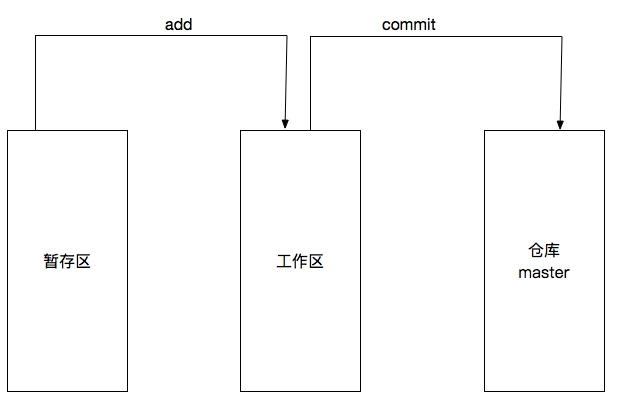
开始吧
了解了工作模式后，就让我们开始吧，接下来的操作全部都是以Git的图形界面软件GitKarken操作
开一个新项目：寻找幸福。
建立git_test文件夹，并写了一个txt文档幸福的秘密.txt
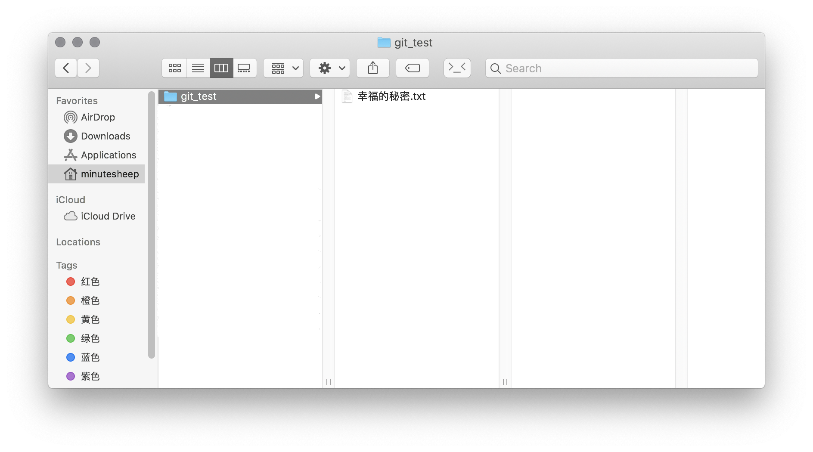
幸福的秘密.txt
Once there lived a king of great strength and wealth.Yet he was not happy.
从前有一位国王，很有权力和财富，然而他并不快乐。
He told his servants to find him things to make him happy,but each came back saying
他告诉仆人去找可以使他快乐的东西，但是每个回来的人都说：
"Noting in the world can match the wonderful things you have already."
“世界上没有什么比得上你已经拥有的极好的东西。”
Then in that land,there lived a poor man with a patch over one eye and a crutch to help him walk.Although he had little,he was always happy.
当时那个国家住着一个穷人，他一个眼睛戴着眼罩并靠拐杖走路。虽然他拥有的很少，但是他总是很快乐。
When the king heard of this,he asked the man to teach him his secret. "I never push." the man replied,"and I never rush.
当国王听说这件事的时候，他要求这个人教他快乐的秘决。 “我从来不强迫，”这个人答道，“而且我从不匆忙。
Most of all,I never wish for too much."Then he smiled and was gone.
最重要的是，我从不希望得到太多。”然后，他笑着离开了。
If you would make a man happy,do not add to his possessions but subtract from his desires.
如果你想使一个人快乐，不要增加他的财产，而是要减少他的欲望。 nce there lived a king of great strength and wealth.Yet he was not happy.
从前有一位国王，很有权力和财富，然而他并不快乐。
He told his servants to find him things to make him happy,but each came back saying
他告诉仆人去找可以使他快乐的东西，但是每个回来的人都说：
"Noting in the world can match the wonderful things you have already."
“世界上没有什么比得上你已经拥有的极好的东西。”
Then in that land,there lived a poor man with a patch over one eye and a crutch to help him walk.Although he had little,he was always happy.
当时那个国家住着一个穷人，他一个眼睛戴着眼罩并靠拐杖走路。虽然他拥有的很少，但是他总是很快乐。
When the king heard of this,he asked the man to teach him his secret. "I never push." the man replied,"and I never rush.
当国王听说这件事的时候，他要求这个人教他快乐的秘决。 “我从来不强迫，”这个人答道，“而且我从不匆忙。
Most of all,I never wish for too much."Then he smiled and was gone.
最重要的是，我从不希望得到太多。”然后，他笑着离开了。
If you would make a man happy,do not add to his possessions but subtract from his desires.
如果你想使一个人快乐，不要增加他的财产，而是要减少他的欲望。
初始化
打开GitKarken软件，点击Start a local repo
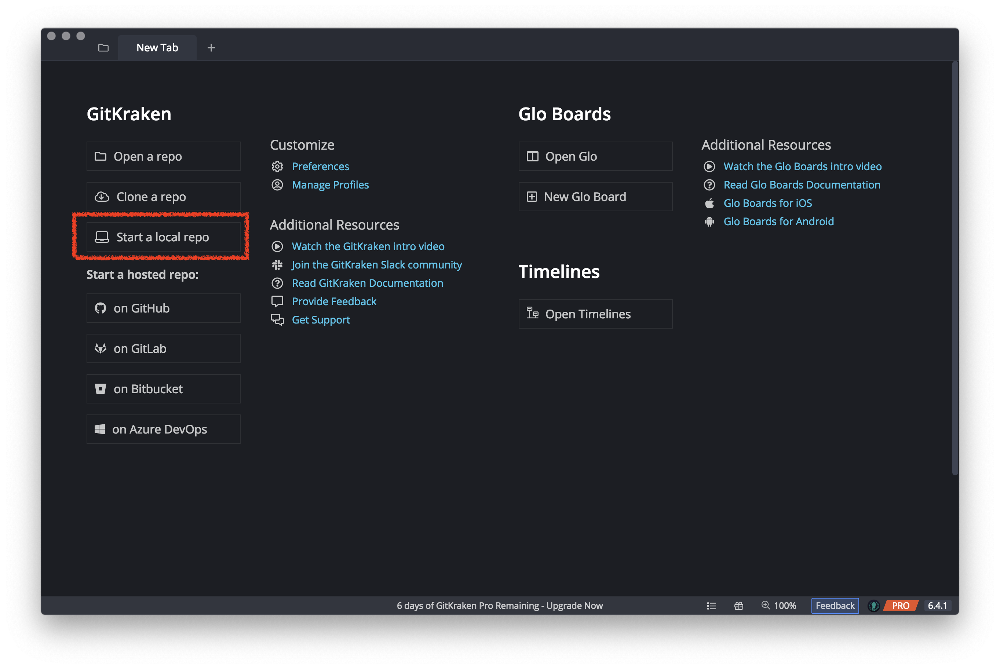
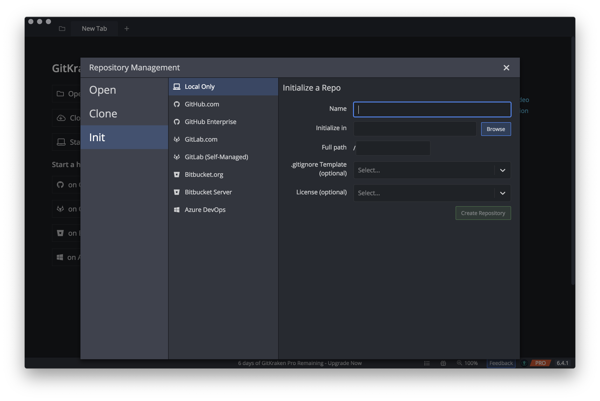
Name处输入寻找幸福，初始化位置选择刚刚创建的git_test文件夹
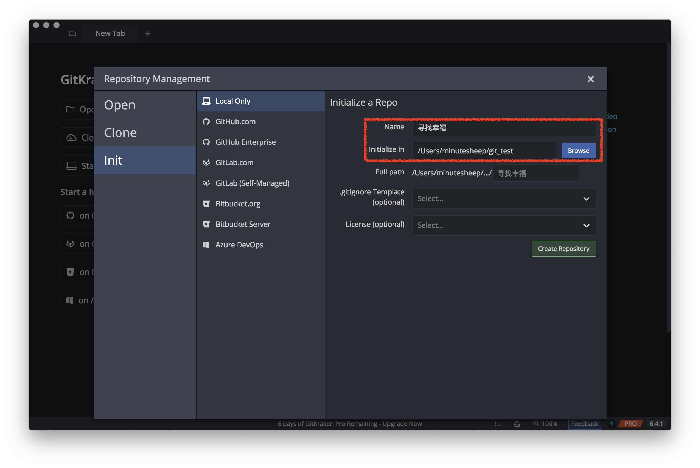
点击Create Repository，初始化成功
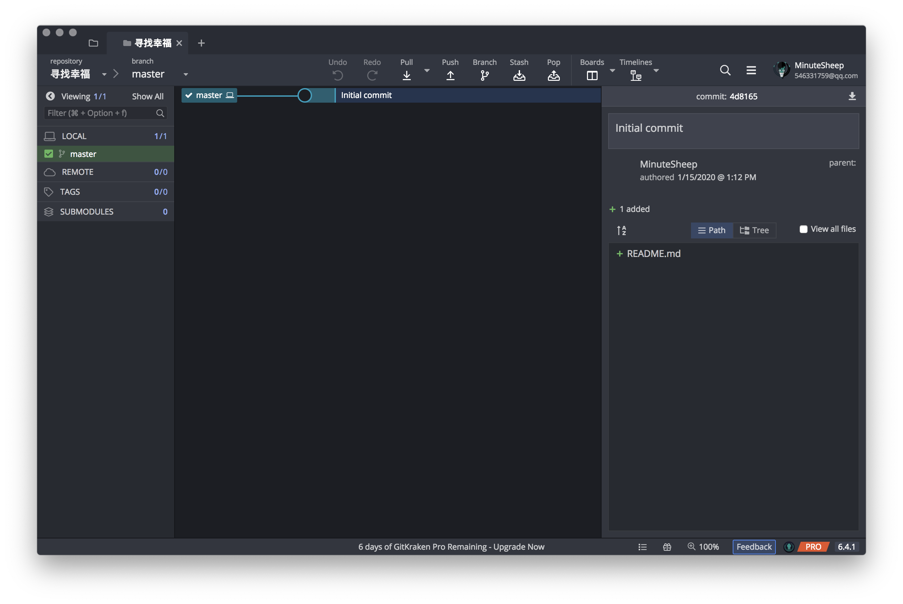
可以看到git_test文件夹下多了一个新的文件夹寻找幸福，里面有一个README.md文件
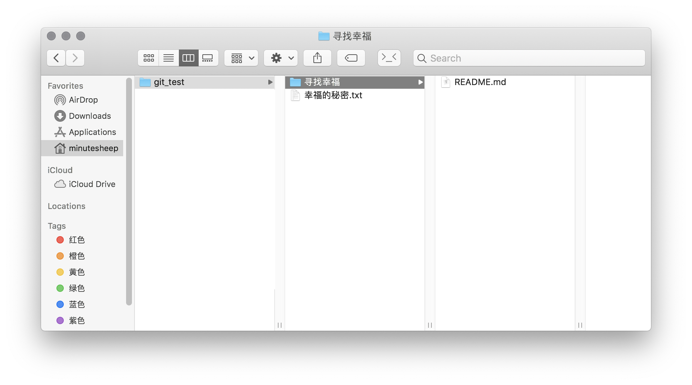
这就是初始化后的内容，为什么要初始化？为了明确这是一个git仓库，让git认识这个文件夹，可以使用git进行管理，一个项目只需要初始化一次
添加文件到暂存区
现在将幸福的秘密.txt移动到刚刚初始化的寻找幸福文件夹下，你会惊奇的发现，软件的界面发生了变化：
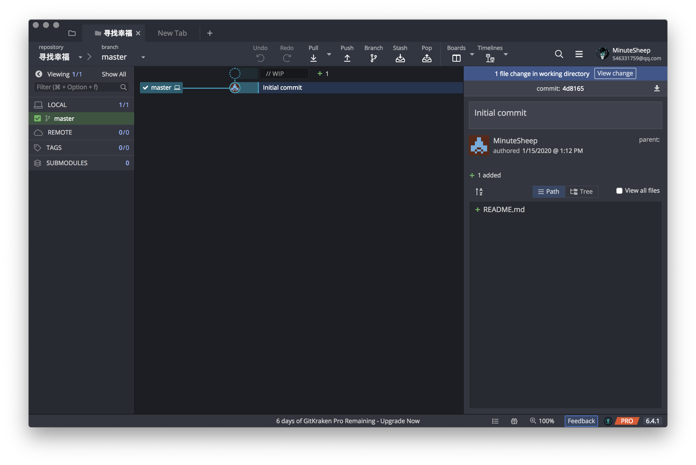
点击新新的变化，右侧会有详细的说明
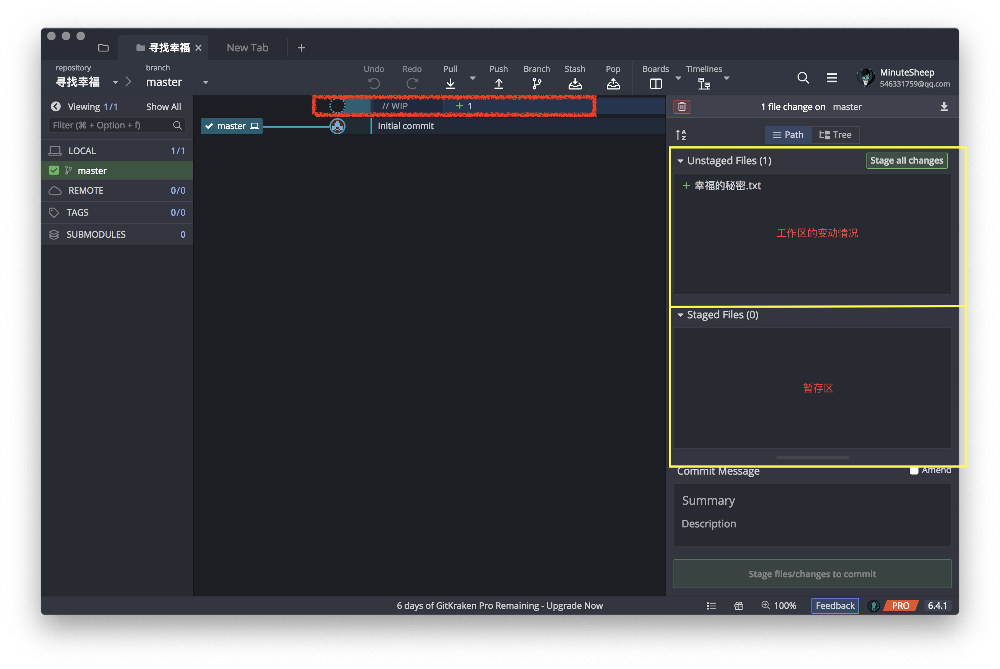
现在将新的文件幸福的秘密.txt放入暂存区，点击Stage all changes:
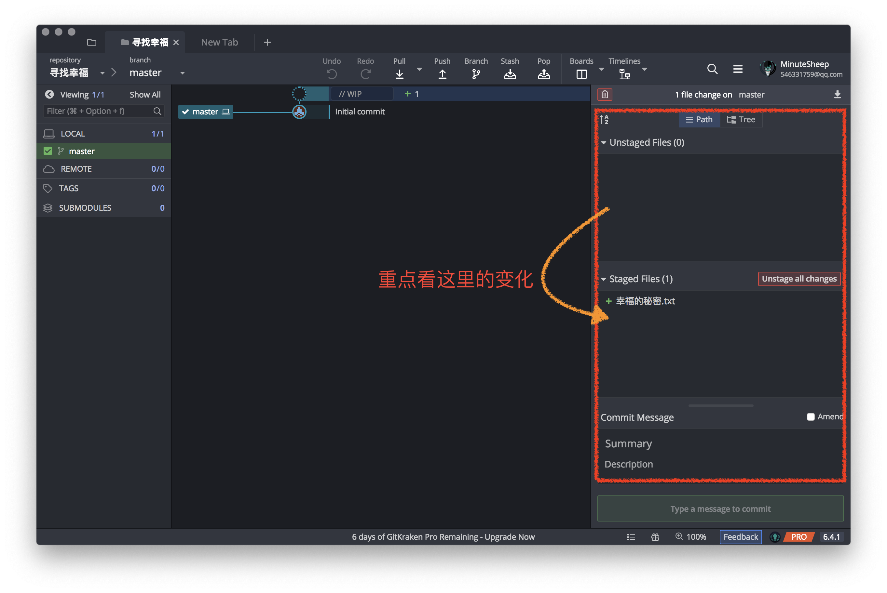
提交到仓库
再将暂存区的文件提交到仓库，提交的时候必须写清楚描述（作了哪些改动）：
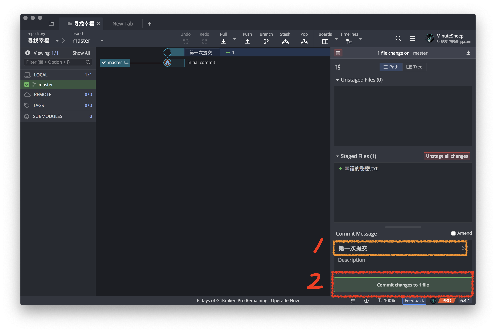
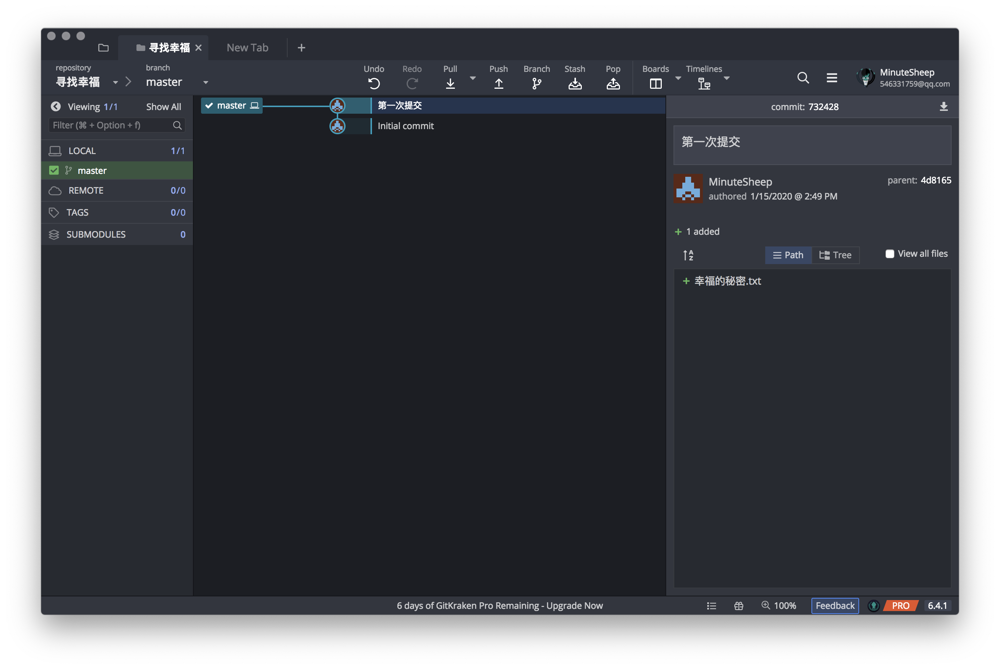
右侧的View all files可以看到这个项目目前提交的所有文件
练习一下下
修改幸福的秘密.txt，文档末尾加入一行幸福是花朵，绽放出光明与希望；幸福是果实，回报以芳香与甘甜；幸福是落叶，奉献出余热化香泥。
然后重复上述过程：先添加文件到暂存区，再提交到仓库。
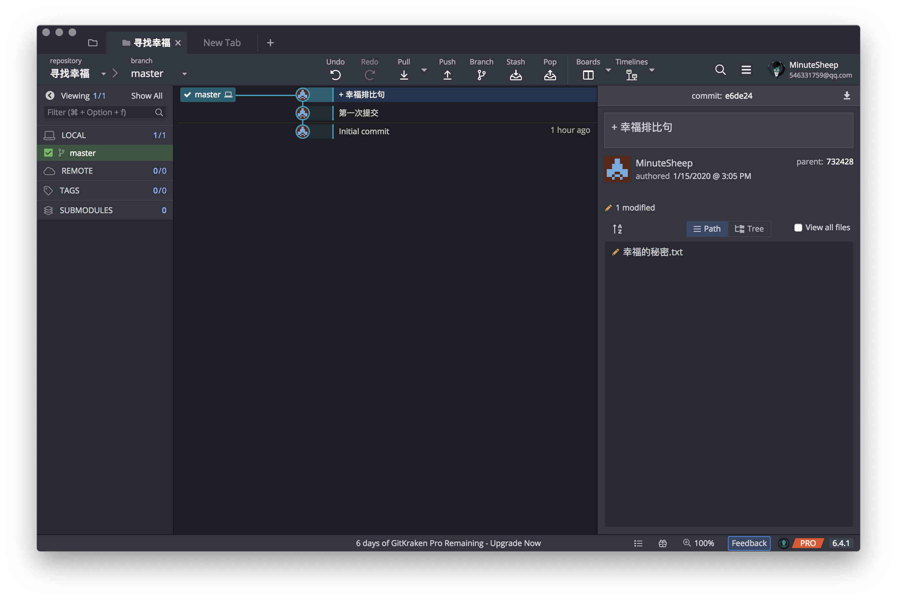
点击右侧修改的文件，可以看到详细的改动
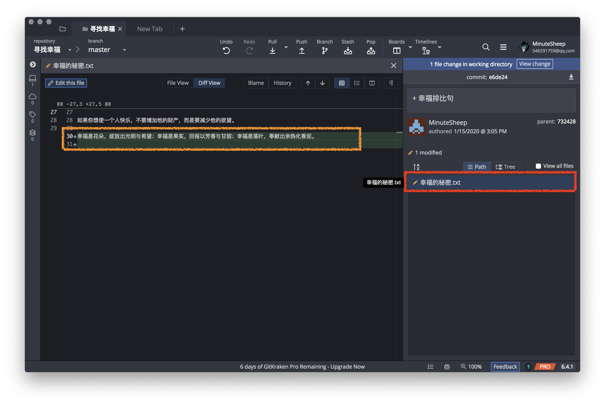
后悔药
工作区后悔
现在你在幸福的秘密.txt写了一行啦啦啦啦啦啦啦
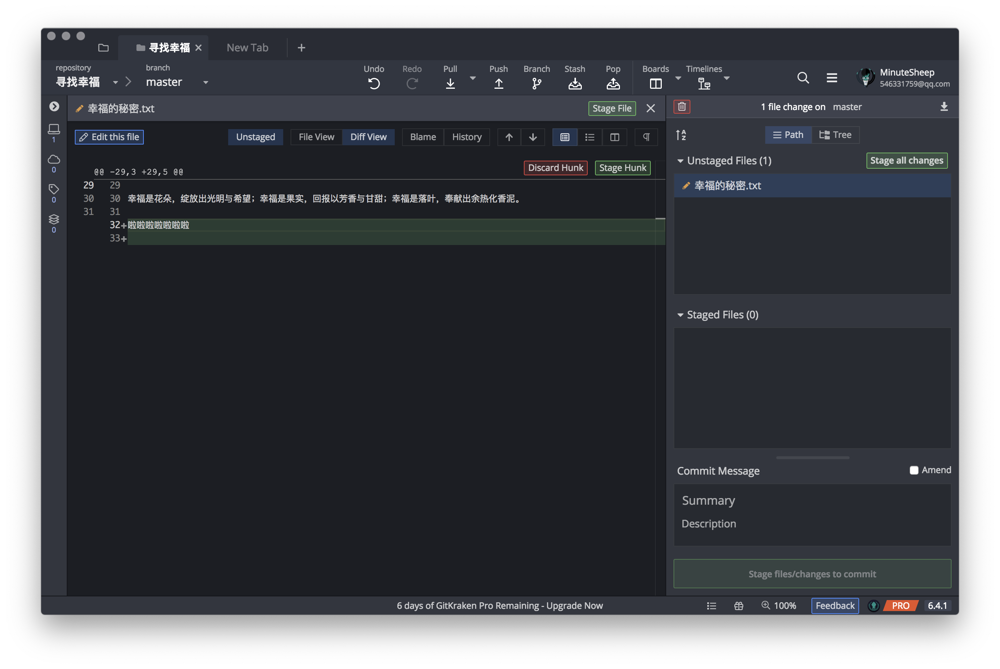
机智的你立刻发现了这个错误，想要删除这一行，两种方法： - 手动去文件里删除这一行 - 或者在GitKarken里点Discard Hunk
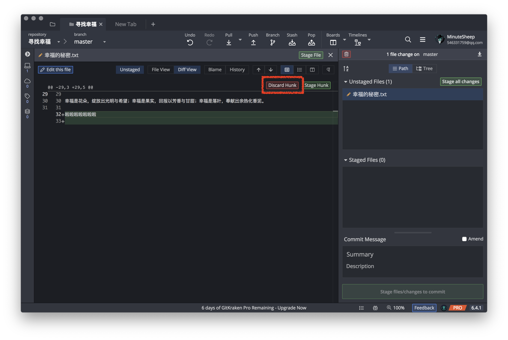
工作区就恢复到之前的状态啦
暂存区后悔
但如果你不小心已经将这个含有啦啦啦啦啦啦啦的文件添加到暂存区了，也可以后悔的，这时候只能使用GitKarken了，点击暂存区的Unstage file将暂存区文件退回到工作区
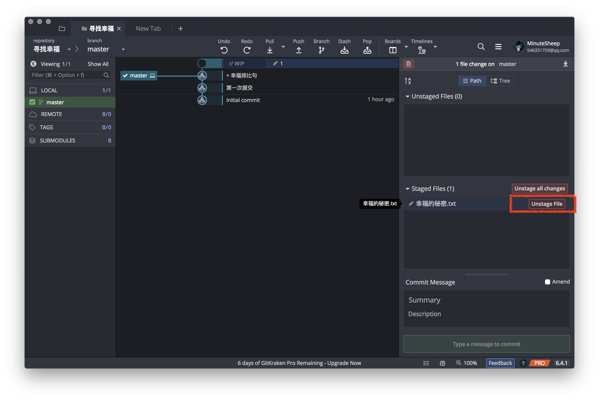
然后参考上步从工作区后悔即可
仓库后悔
但如果不幸的是，你已经提交到仓库了，想要后悔该怎么办呢？有办法！那就是版本回退
在想要回退的版本上面鼠标右键，可以看到Reset master to this commit，后面有三个选项
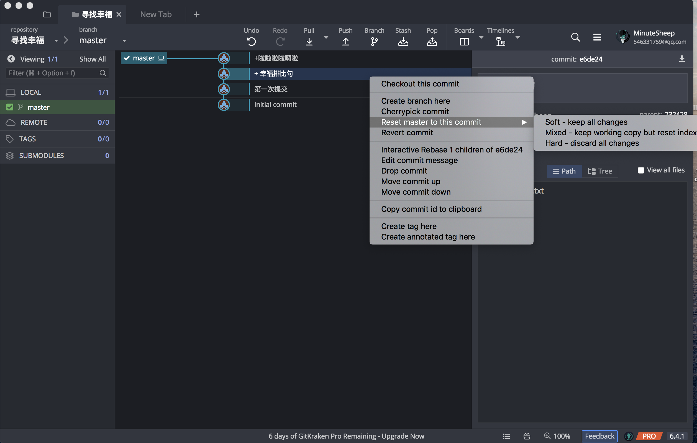
- soft：将这个版本以后的所有改动退回到暂存区
- mixed：将这个版本以后的所有改动退回到工作区
- hard：将这个版本以后的所有改动删除，直接回到这个版本，改动将丢失，慎用！
版本回退后，我胡汉三又回来啦：
总结
对于XcYu来说，这些基本够用了，加油，为了更高效率而学习
参考资料